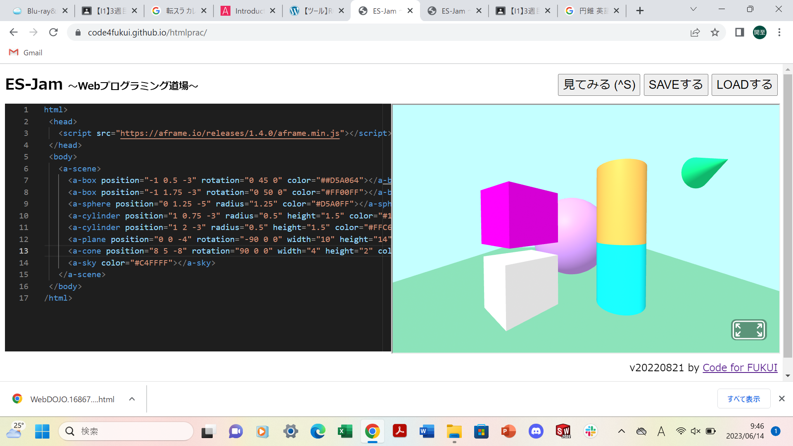
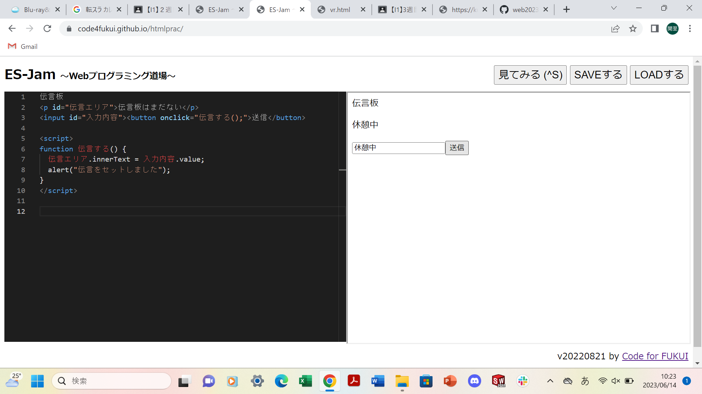

第3週目
3-1 JavaScript体験：VR空間を作る

自作した３次元空間
1.内容
プログラミングを打って、立体を作った。box 立方体 sphere 球 cylinder 円柱 cone 円錐 sky 背景 plane 床 になっている。
2.感想
Youtubeで今回のような立体を何度か見たことがあり、作るのは簡単そうだなと思っていたけれど、実際は「何をどう組み合したら、目的の形を得られるか」というのを自分で計算する必要があり、それが難しく感じた。
3-2 JavaScript体験：伝言プログラムを作る

伝言板
1.内容
自分でプログラムを打って「伝言板」を作成した。
2.感想
Googleなどの検索機関での検索エンジンのプログラミングも今回作ったようなものなのかなと思った。
3-3 JavaScriptプログラムの３次元空間の体験
1.内容
指定した場所に転移したり、玉を投げたりもした。また、図体をつかんで移動させたり図体の上に乗ったりもした
2.感想
前回のVR体験と比べると体験時間が少なかったこともあり、思う存分には楽しめなかったけれど立体の空間の中で操作するというのは面白かった。日常生活の中の物体は複雑な形をしているがVRゴーグルの中の立体の形は簡単な形をしていたので、新鮮な感じだった。